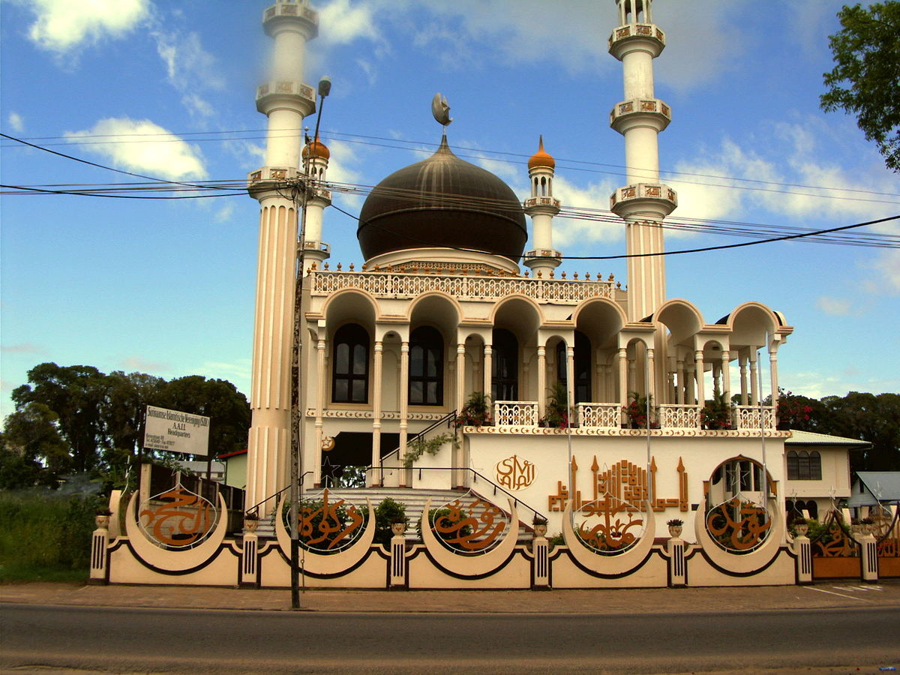
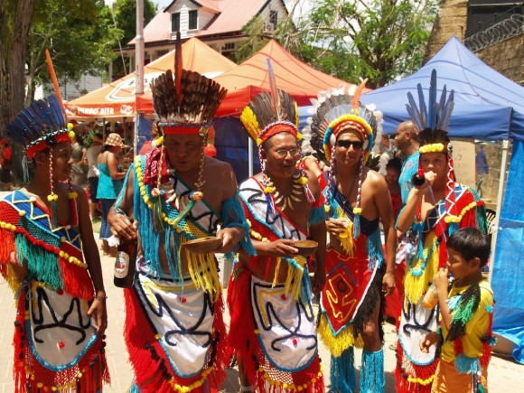

×

Suriname
Люди
Численность населения - низкая,
Средняя продолжительность жизни — 69 лет у мужчин, 74 года — у женщин, афро-суринамцы
мароны («лесные негры») 21,7 %
креолы 15,7 %
индийцы 27,4 %
яванцы 13,7 %
смешанный 13,4 %
другие 7,6 %
нет данных 0,6 %
Языки — Официальный язык страны — нидерландский.
Религия - Христианство 49,6 %, в том числе:
протестанты 23,6 %, в том числе:
баптисты 11,2 %
мораване 11,2 %
реформисты 0,7 %
лютеране 0,5 %
католики 21,6 %
Свидетели Иеговы 1,2 %
прочие христиане 3,2 %
Индуизм 22,3 %
Ислам 13,8 %
атеисты 7,5 %
винти 1,8 %
другие 1,7 %
нет данных 3,2 %

____